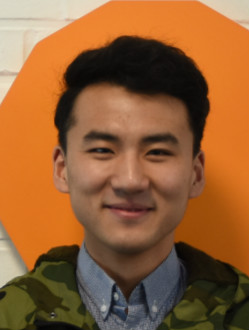

Haoyu WU
26/04/1998,Chinese,bachelordom
Résidence Universitaire Léonard de Vinci, Cité Scientifique,
59650 Villeneuve d’Ascq, Lille-France
Phone:06 59 94 66 22
E-mail: Haoyu.wu@centrale.centralelille.fr
Programming Languages
-Java
-Python
-C
-C++
-Matlab
Interest
Sports
Basketball, runing, swimming
Cook
Chinese foods, french cuisine
Passion
Chinese Calligraphy
Langue
Chinese
language maternel
French
excellent level written and spoken
English
good level written and spoken
Formation
Sept.2017-actuellement
General engineer (double degree)
École centrale de lille
Sept.2014-Juillet.2017
Professional engineer
South West Jiaotong University
Speciality : mesure
Experiences Profesionnelle
Feb.2018 : Internship of worder
One-month internship in CERP Rouen
Nov.2017 : Election of community BDA 2017-2018
BDA is the emblem of art union for École centrale de lille
responsible for all kinds of literary and artistic
Août.2016 : The 10th NCTU Summer program
Exchange with National Chiao Tung University (Taiwan)
Worked for the project "reflection and design"
Sept.2016- Juillet.2017 : Vice president
Vice president of student union in MAO yisheng college
"Excellent vice president" of the year 2016
Sept.2015- Juillet.2017 : Chef of classe (grade 2015)
"Excellent chef" of the year 2015, "excellent chef" of the year 2016
Organization of activities and trips
Dec.2015- Dec.2016 : Volunteer Advertising Manager
School advertising
Manager in Shandong Province
Haoyu wu